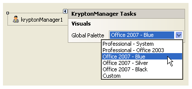
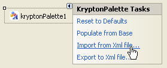
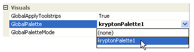
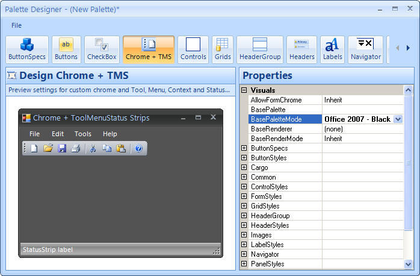
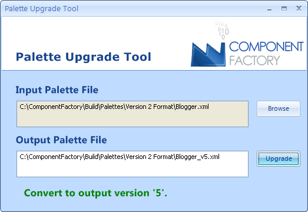

Palettes
Using palettes allows you to quickly alter the look and feel of your application. By altering the global palette setting you can cause all the Krypton controls to update to the new appearance in one action. Alternatively you can modify the palette to be used on a per toolkit control basis in order to use different palettes for different controls. There are three sources of palettes available to you as a toolkit developer.
Built in palettes
The Krypton Toolkit comes with built in palettes that are embedded in the library itself. For example the Office 2007 - Blue and Professional - Office 2003 palettes are provided out of the box. You can use the KryptonManager component to alter the global palette to one of the built in choices. Figure 1 shows the global palette being altered to a built in palette.

Figure 1 - KryptonManager smart tag
Import a palette definition
Your second option is to add a KryptonPalette component to the application and then import palette settings from a palette definition file. Palette definition files are just XML documents that store all the settings and images needed to recreate a palette. All you need to do is drop a new KryptonPalette onto your form and then click the smart tag.
The smart tag contains options to Export and Import palette definitions. Figure 2 shows the smart tag for the KryptonPalette.

Figure 2 - KryptonPalette smart tag
Now you need to alter the KryptonManager property called GlobalPalette so that the KryptonPalette component is used instead of one of the built in options. Figure 3 shows the property being altered at design time.

Figure 3 - KryptonManager GlobalPalette property
Note that exporting a palette will only save values that are not the default. So if you have only changed a few values from the default then the exported XML file will be very small and compact. When importing a palette the only values that will be changed in the palette are those than are read in from the XML file. If you have a new instance of a KryptonPalette component then all the values will be defaulted and importing a palette will achieve the expected changes.
If you expect that some of the palette values are not defaulted and might not be changed by the incoming XML file then you should perform a Reset to Defaults before the import; figure 2 shows the reset task on the smart tag. This resets all palette properties back to the default values they would have when the component was first created.
Populate from base
Another option available from the palette smart is called Populate from base. This option will update all the values in the palette with the values that are available from the base palette. So if the base palette is the built in Professional - Red then the values will consist of the red gradient colors the base exposes. Note that all styles prefixed Custom will not be imported as these styles are always local to a particular palette.
Creating a palette definition
You can create a new palette definition instead of importing an existing definition. You could do this by altering the properties of the KryptonPalette using the properties window at design time. This is however quite difficult as you cannot see the changes taking effect immediately unless you have every type of control on your form at the same time. Instead you should use the Palette Designer utility that can be started from the Krypton Explorer program. There should be a link to the explorer application placed on your desktop during the install process.
Use the Palette Designer to modify the palette properties and see the changes immediately. Once you are finished you can save the settings to a palette definition file. Then just use the smart tag on the KryptonPalette to access the Import option and select the file just saved from the Palette Designer. Figure 4 shows the Palette Designer.

Figure 4 - Palette Designer
Upgrading Palette Definitions
When moving from one version of Krypton to another there are sometimes changes made to the palette XML format. When this happens you can use the Palette Upgrade Tool to convert palette XML files to the latest file format. This utility can be started from the Krypton Explorer program, a shortcut for which should be on your desktop after installation. Figure 5 shows the tool in action.

Figure 5 - Palette Upgrade Tool
You can make use of the tool to upgrade Krypton Palette component instances. Before installing a new version of Krypton you can use the Export option on the palette in order to create a palette definition file. Then perform a Reset on the palette component so it is defaulted for all its values. Once the new version of Krypton has been installed you use the Palette Upgrade Tool to update the XML file and then Import it into the palette component. This is easier than trying to fix the compile time